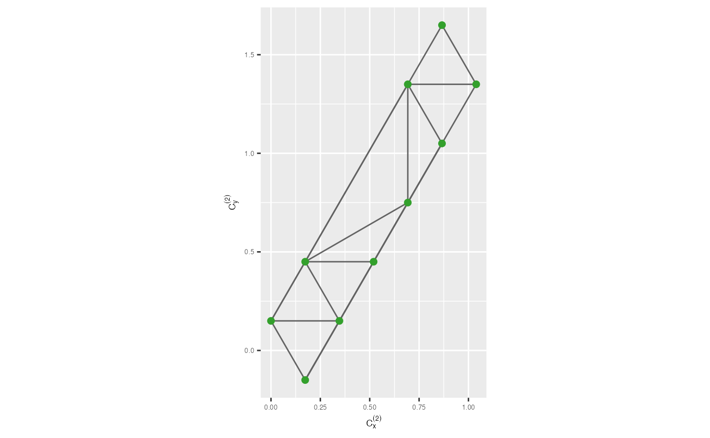
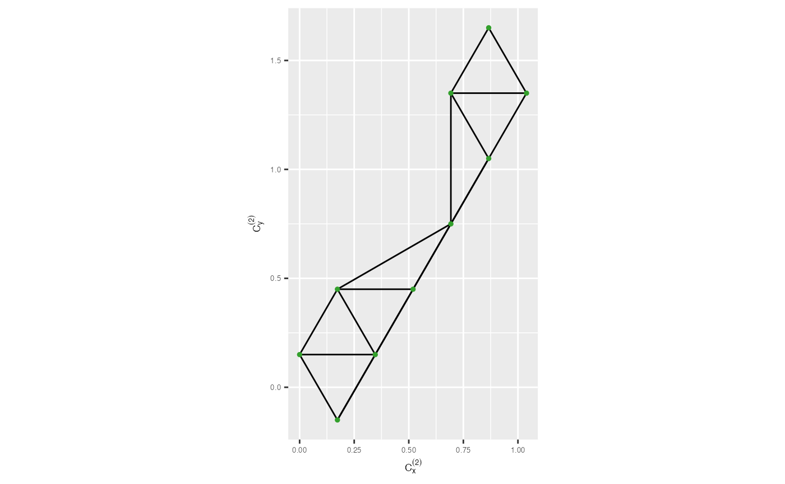

Constructing the model in the 2D space
1. Compute hexagonal grid configurations
Number of bins along the x-axis
To begin the algorithm, you need to determine the number of bins along the x-axis for creating regular hexagons in the hexagonal grid.
num_bins_x <- calculate_effective_x_bins(nldr_df = s_curve_noise_umap_scaled,
x = "UMAP1", hex_size = 0.2)
num_bins_x
#> [1] 5Number of bins along the y-axis
Then, you need to determine the shape parameter, which control the shape and size of the hexagons in the hexagonal grid.
num_bins_y <- calculate_effective_y_bins(nldr_df = s_curve_noise_umap_scaled,
y = "UMAP2", hex_size = 0.2)
num_bins_y
#> [1] 82. Obtain hexagonal bin centroids
hb_obj <- generate_hex_binning_info(nldr_df = s_curve_noise_umap_scaled,
x = "UMAP1", y = "UMAP2", num_bins_x = num_bins_x,
num_bins_y = num_bins_y, x_start = NA,
y_start = NA, buffer_x = NA,
buffer_y = NA, hex_size = 0.2)
all_centroids_df <- as.data.frame(do.call(cbind, hb_obj$full_grid_hex_centroids))
counts_df <- as.data.frame(do.call(cbind, hb_obj$hex_id_with_std_counts))
df_bin_centroids <- extract_hexbin_centroids(centroids_df = all_centroids_df,
counts_df = counts_df)
glimpse(df_bin_centroids)
#> Rows: 12
#> Columns: 4
#> $ hexID <dbl> 1, 2, 6, 7, 12, 13, 18, 23, 27, 28, 33, 34
#> $ c_x <dbl> 0.0000000, 0.3464102, 0.1732051, 0.5196152, 0.3464102, 0.69…
#> $ c_y <dbl> 0.0, 0.0, 0.3, 0.3, 0.6, 0.6, 0.9, 1.2, 1.5, 1.5, 1.8, 1.8
#> $ std_counts <dbl> 0.40000000, 0.26666667, 0.86666667, 0.13333333, 0.20000000,…3. Remove low-density hexagons
## To identify low density hexagons
df_bin_centroids_low <- df_bin_centroids |>
dplyr::filter(std_counts <= 0.25)
## To identify low-density hexagons needed to remove by investigating neighbouring mean density
identify_rm_bins <- find_low_density_hexagons(df_bin_centroids_all = df_bin_centroids,
num_bins_x = num_bins_x,
df_bin_centroids_low = df_bin_centroids_low)
## To remove low-density hexagons
df_bin_centroids <- df_bin_centroids |>
dplyr::filter(!(hexID %in% identify_rm_bins))4. Triangulate hexagonal bin centroids
Next, you need to perform triangulation on the bin centroids to construct a triangular mesh. Triangulation involves connecting the bin centroids with triangular edges to form a mesh that reveals the local structure of the data.
tr1_object <- triangulate_bin_centroids(hex_bin_df = df_bin_centroids, x = "c_x", y = "c_y")
str(tr1_object)
#> List of 10
#> $ n : int 12
#> $ x : num [1:12] 0 0.346 0.173 0.52 0.346 ...
#> $ y : num [1:12] 0 0 0.3 0.3 0.6 0.6 0.9 1.2 1.5 1.5 ...
#> $ tlist: int [1:60] 2 3 3 -1 1 2 4 4 3 -2 ...
#> $ tlptr: int [1:60] 2 27 4 8 6 7 11 3 10 16 ...
#> $ tlend: int [1:12] 27 4 11 10 23 18 22 26 41 40 ...
#> $ tlnew: int 51
#> $ nc : num 0
#> $ lc : num 0
#> $ call : language tripack::tri.mesh(x = hex_bin_df[[rlang::as_string(rlang::sym(x))]], y = hex_bin_df[[rlang::as_string(rlang::sym(y))]])
#> - attr(*, "class")= chr "tri"
tr_from_to_df <- generate_edge_info(triangular_object = tr1_object)
tr_from_to_df
#> # A tibble: 25 × 6
#> from to x_from y_from x_to y_to
#> <int> <int> <dbl> <dbl> <dbl> <dbl>
#> 1 1 2 0 0 0.346 0
#> 2 1 3 0 0 0.173 0.3
#> 3 2 4 0.346 0 0.520 0.3
#> 4 3 4 0.173 0.3 0.520 0.3
#> 5 3 5 0.173 0.3 0.346 0.6
#> 6 4 6 0.520 0.3 0.693 0.6
#> 7 5 6 0.346 0.6 0.693 0.6
#> 8 5 7 0.346 0.6 0.866 0.9
#> 9 5 8 0.346 0.6 0.693 1.2
#> 10 7 12 0.866 0.9 1.04 1.8
#> # ℹ 15 more rows
## To draw the traingular mesh
trimesh <- ggplot(df_bin_centroids, aes(x = c_x, y = c_y)) +
geom_trimesh() +
coord_equal() +
xlab(expression(C[x]^{(2)})) + ylab(expression(C[y]^{(2)})) +
theme(axis.text = element_text(size = 5),
axis.title = element_text(size = 7))
trimesh
5. Remove long edges
## Compute 2D distances
distance_df <- cal_2d_dist(tr_from_to_df_coord = tr_from_to_df, start_x = "x_from",
start_y = "y_from", end_x = "x_to", end_y = "y_to",
select_col_vec = c("from", "to", "distance"))
## To find the benchmark value to remove long edges
benchmark <- find_benchmark_value(distance_edges = distance_df, distance_col = "distance")
benchmark
#> [1] 0.6
## To draw the traingular mesh after remove long edges in 2D
trimesh_removed <- remove_long_edges(distance_edges = distance_df,
benchmark_value = 0.75,
tr_from_to_df_coord = tr_from_to_df,
distance_col = "distance") +
xlab(expression(C[x]^{(2)})) + ylab(expression(C[y]^{(2)})) +
theme(axis.text = element_text(size = 5),
axis.title = element_text(size = 7))
trimesh_removed
Lifting the model into high dimensions
To extend the model created in the 2D space to higher dimensions, you need to take the average of the high-dimensional coordinates within hexagonal bins.
## Add hexbin Ids for the 2D embeddings
umap_data_with_hb_id <- as.data.frame(do.call(cbind, hb_obj$nldr_data_with_hex_id))
umap_data_with_hb_id
#> UMAP1 UMAP2 hb_id
#> 1 0.08044271 0.274498327 6
#> 2 0.73857864 0.859778569 18
#> 3 0.83992020 0.929412446 18
#> 4 0.16719939 0.037066861 1
#> 5 0.26292782 0.341734583 6
#> 6 0.83820653 1.720961652 33
#> 7 0.73364820 0.833935370 18
#> 8 0.62693057 0.618409921 13
#> 9 0.80998347 0.868291303 18
#> 10 0.90342138 1.600664528 28
#> 11 0.64241759 0.631646064 13
#> 12 0.05182936 0.320865388 6
#> 13 0.96228699 1.546732900 28
#> 14 0.07223295 0.218331864 6
#> 15 0.64916340 0.593427000 13
#> 16 0.80783543 1.374772146 28
#> 17 0.13518498 0.335559538 6
#> 18 0.80668446 1.381019256 28
#> 19 0.60311661 0.597381477 13
#> 20 0.16150976 0.009905107 1
#> 21 0.71326033 0.797282390 18
#> 22 0.09405763 0.058760856 1
#> 23 0.08900367 0.252258947 6
#> 24 0.77510396 1.730112607 33
#> 25 0.79296306 1.100876246 23
#> 26 0.28575187 0.202379969 6
#> 27 0.46806684 0.482713207 12
#> 28 0.57541142 0.708486670 13
#> 29 0.21053454 0.151933039 6
#> 30 0.62412077 0.712391079 13
#> 31 0.76738169 1.018811832 18
#> 32 0.76427076 1.552630670 28
#> 33 0.64842247 0.661926514 13
#> 34 0.03170275 0.303630086 6
#> 35 0.96450414 1.665355817 34
#> 36 0.10117880 0.050909321 1
#> 37 0.71265285 1.539719959 28
#> 38 0.82904448 1.722765733 33
#> 39 0.81275032 1.732050808 33
#> 40 0.00000000 0.271778584 6
#> 41 0.38392618 0.390190144 7
#> 42 0.82638316 1.011632238 18
#> 43 0.29256853 0.138015108 2
#> 44 0.84482412 0.983163036 18
#> 45 0.79995094 0.964486583 18
#> 46 0.69339205 1.448210796 28
#> 47 0.13459287 0.000000000 1
#> 48 0.04209521 0.257916294 6
#> 49 0.94245034 1.680924200 34
#> 50 0.05349536 0.187982579 6
#> 51 0.68677026 0.778563498 13
#> 52 0.77828853 0.839937252 18
#> 53 0.75504949 1.670893354 33
#> 54 0.23125328 0.061042472 2
#> 55 0.76831122 1.497157149 28
#> 56 0.69843891 1.621642749 33
#> 57 0.72681720 0.931757885 18
#> 58 0.99318862 1.521102615 28
#> 59 0.96227596 1.546125959 28
#> 60 0.39315580 0.328235991 7
#> 61 0.74175661 1.681926517 33
#> 62 0.94650462 1.524113512 28
#> 63 0.50932690 0.617404710 12
#> 64 1.00000000 1.625538768 34
#> 65 0.33548077 0.278688714 6
#> 66 0.25450458 0.063074584 2
#> 67 0.88588122 1.408512652 28
#> 68 0.72192354 0.952956061 18
#> 69 0.68029522 1.508729997 27
#> 70 0.92537063 1.455380663 28
#> 71 0.80964667 1.529334517 28
#> 72 0.49582819 0.604985028 12
#> 73 0.16301062 0.030266486 1
#> 74 0.29499615 0.117297635 2
#> 75 0.91053035 1.445460921 28
## To generate a data set with high-dimensional training data and 2D embeddings with hexagonal IDs
df_all <- dplyr::bind_cols(s_curve_noise_training |> dplyr::select(-ID), umap_data_with_hb_id)
df_all
#> # A tibble: 75 × 10
#> x1 x2 x3 x4 x5 x6 x7 UMAP1 UMAP2
#> <dbl> <dbl> <dbl> <dbl> <dbl> <dbl> <dbl> <dbl> <dbl>
#> 1 -0.120 0.114 -1.99 -0.00246 -0.0178 -0.0181 -0.00317 0.0804 0.274
#> 2 -0.0492 0.822 0.00121 0.0161 0.00968 -0.0834 0.00230 0.739 0.860
#> 3 -0.774 0.243 0.367 -0.0198 0.00408 -0.0349 -0.00911 0.840 0.929
#> 4 -0.606 1.96 -1.80 0.0132 -0.000479 -0.00478 -0.00843 0.167 0.0371
#> 5 0.818 0.0388 -1.58 0.00253 0.00167 0.0781 -0.00771 0.263 0.342
#> 6 0.910 1.55 1.42 0.0124 0.0160 -0.00248 -0.00832 0.838 1.72
#> 7 -0.0691 0.978 0.00239 0.0115 0.00350 0.0898 0.00359 0.734 0.834
#> 8 0.859 1.55 -0.488 -0.00753 -0.0123 0.0336 -0.00665 0.627 0.618
#> 9 -0.0400 0.286 0.000801 0.0123 0.00613 -0.0121 -0.000347 0.810 0.868
#> 10 0.765 0.898 1.64 -0.0178 0.0151 -0.0710 -0.00624 0.903 1.60
#> # ℹ 65 more rows
#> # ℹ 1 more variable: hb_id <dbl>
df_bin <- avg_highD_data(.data = df_all)
df_bin
#> # A tibble: 12 × 8
#> hb_id x1 x2 x3 x4 x5 x6 x7
#> <dbl> <dbl> <dbl> <dbl> <dbl> <dbl> <dbl> <dbl>
#> 1 1 -0.753 1.62 -1.56 0.00687 0.00277 -0.0176 -0.000562
#> 2 2 0.213 1.67 -1.91 0.00714 -0.00672 -0.00213 -0.000491
#> 3 6 -0.0291 0.403 -1.87 0.00370 -0.000454 -0.0209 -0.00177
#> 4 7 0.943 0.757 -1.32 -0.00720 -0.00319 0.0572 0.00230
#> 5 12 0.799 0.527 -0.476 0.00328 0.00490 -0.00246 -0.000786
#> 6 13 0.660 1.51 -0.331 -0.000441 0.000757 0.0274 0.00201
#> 7 18 -0.452 1.07 0.246 0.00355 0.00165 0.00457 0.00121
#> 8 23 -0.988 1.64 1.16 0.00754 -0.0104 -0.00129 0.00489
#> 9 27 -0.557 1.52 1.83 0.00998 0.00198 -0.0936 -0.00417
#> 10 28 0.0233 0.749 1.84 -0.00276 0.00397 -0.00751 -0.00132
#> 11 33 0.689 1.74 1.64 0.00210 0.00370 -0.00532 -0.000634
#> 12 34 0.984 0.809 1.15 0.00437 -0.00191 0.0210 0.000373Visualize the model and high-dimensional data in the high-dimensional space
To visualize the model and the high-dimensional data, tour technique is used.
tour1 <- show_langevitour(df = df_all, df_b = df_bin,
df_b_with_center_data = df_bin_centroids,
benchmark_value = 0.75,
distance_df = distance_df, distance_col = "distance",
use_default_benchmark_val = FALSE, column_start_text = "x")
tour1